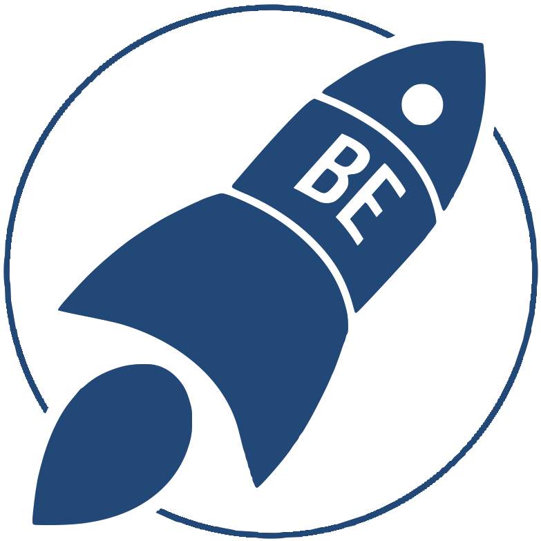
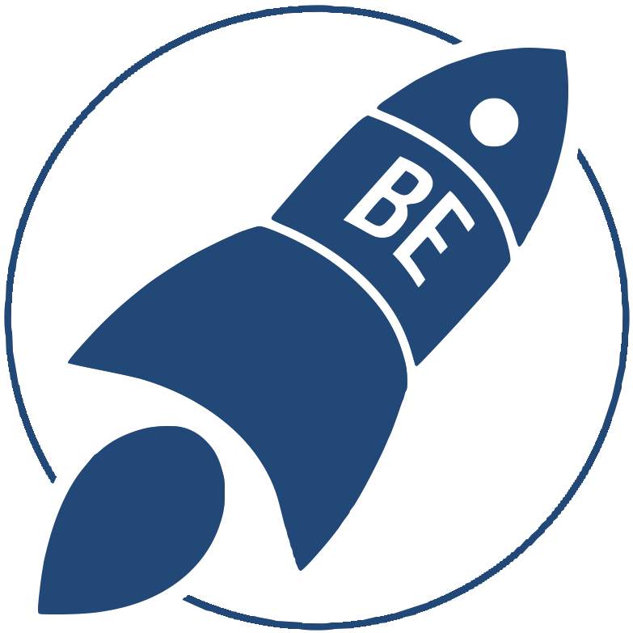
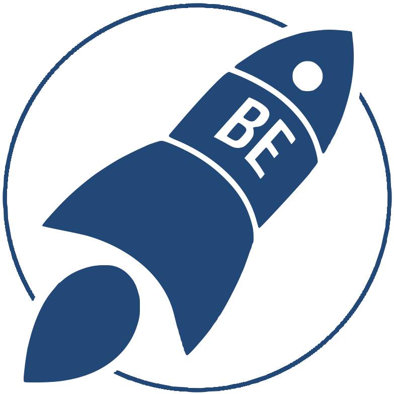
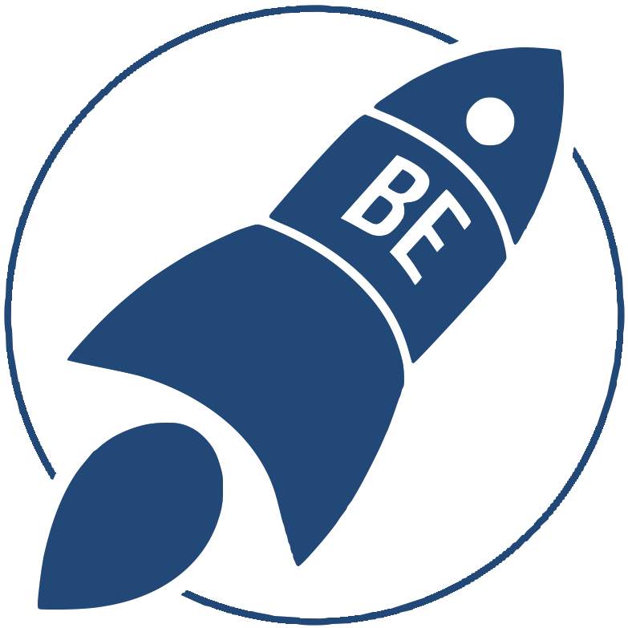

Bruin Entrepreneurs
Launch your entrepreneurial journey


 

Launch your entrepreneurial journey
Bruin Entrepreneurs is the resource and hub for all things startup and entrepreneurship related on campus. Established in 2012, we’ve created a space for entrepreneurship at UCLA by hosting events and workshops, inviting speakers, and running an in-house accelerator.
Our current initiatives include 1000 Pitches, Startup Fair, Designathon, Startup Labs, and more. Our programs and events are designed to spark innovative dialogue and encourage creativity.